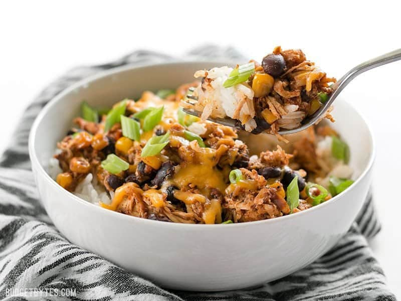

Crockpot Salsa Chicken

Slow Cooker Taco Chicken Bowls are the ultimate "set it and forget it"
easy weeknight meal that the whole family will love.
Ingredients:
- 1 1/2 lbs. chicken breasts
- 1 16 oz. jar salsa
- 2 cloves garlic, minced (more to taste)
- 1 15 oz. can black beans
- 1/2 lb frozen corn
- 1 Tbsp chili powder
- 1/2 Tbsp ground cumin
- 1/2 tsp ground oregano
- 1/4 tsp cayenne pepper (more to taste)
- freshly cracked black pepper
- 6 cups cooked rice
- 8 oz. shredded cheddar or mexican blend cheese
- 3 green onions, sliced (or fresh cilantro)
Instructions:
- Place the chicken breasts in the bottom of a 5 quart or
larger slow cooker. Drain the black beans and add them to the slow
cooker along with the salsa and corn. Add 1/4 cup water, plus the
minced garlic, chili powder, cumin, oregano, cayenne, some freshly
cracked pepper (about 10-15 cranks of a pepper mill).
- Give the ingredients a brief stir to distribute the spices.
Secure the lid on your slow cooker and cook on low for 8 hours or
high for 4 hours.
- After 8 hours on low or 4 hours on high, carefully remove the lid
of the slow cooker. Stir with a fork to shred the chicken (it
should be very tender and will shred easily). Taste the chicken
mixture and add salt if needed.
- To build the bowls, place one cup of rice in the bottom of a bowl
and top with 1 cup of the shredded chicken mixture. Top with a
little cheddar cheese and a sprinkle of sliced green onions.
recipe © BudgetBytes